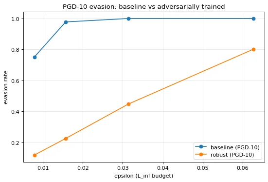

adversarial-ml-playground
Three classic adversarial attacks implemented from scratch in PyTorch (no cleverhans, no foolbox) against a CNN trained on CIFAR-10, then a defense with PGD adversarial training. CPU-only, reproducible on a laptop.
72.4%clean accuracy
0%under PGD-10, ε=8/255
33%recovered by adversarial training
~3%of pixel range changed
01. the attacks
| attack | idea | bound | steps |
|---|---|---|---|
| FGSM | one big step in the direction that hurts the model most | L∞ | 1 |
| PGD | many small FGSM steps that follow the loss surface | L∞ | 10 |
| DeepFool | smallest perturbation that crosses the nearest boundary | L2 | iter. |
02. play with the attacker budget
ε is the maximum change allowed per pixel. Move it and watch the undefended model collapse.
Accuracy under attack; higher is better for the defender.
03. results

The trade-off is the real lesson: the robust model drops to 59.6% clean accuracy (vs 72.4%), and it only defends the budget it was trained on, falling to 11.8% at ε=16/255. There is no free lunch in robustness.